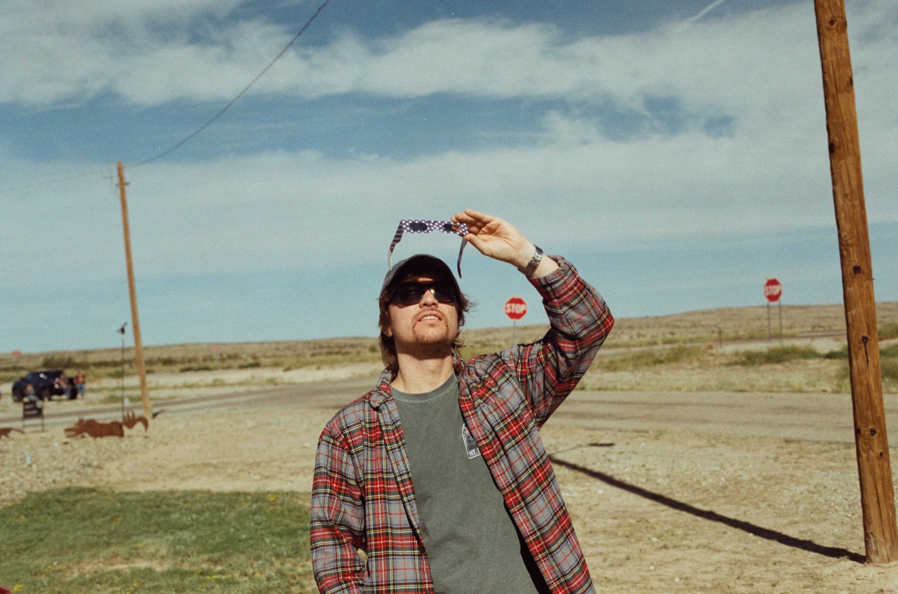

Astrophysicist
Collin Christy
I am a PhD candidate in Astronomy & Astrophysics at the University of Arizona’s Steward Observatory, where my research focuses on the radio properties of high-energy extragalactic transients, particularly tidal disruption events and gamma-ray bursts. My work aims to understand the physics of relativistic outflows, jet formation, and the environments surrounding these phenomena.
